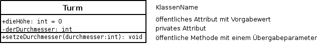
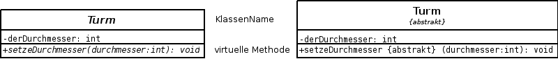
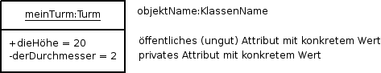
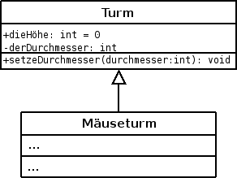
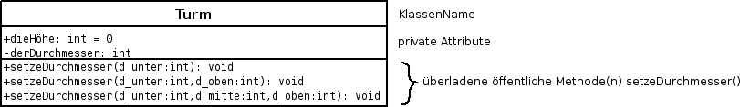
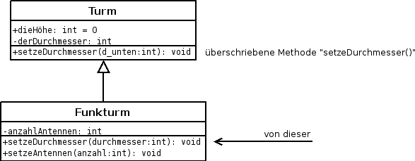

Beachte: Übersichtliche Darstellung des Programmcodes
Sinnvolle Einrückungen, sinnvolle Leerzeilen
"Sprechende" VariablenNamen, ...
Aussagefähige Kommentare
Regeln zur gefälligen Beachtung
Programmbeispiel - Konsoleanwendung "Hello World!"
#include <stdio.h>
#include <stdlib.h>
#include <iostream>
using namespace std;
int main()
{
char str[22];
cin.getline(str,21); //Variante I
cin >> str; //Variante II
//printf("Hallo %s\n", str); //in C (old world ;-)
cout << "Hallo neue Welt!" << str << endl;
}
Beachte
Dateiendung: .cpp
kompilieren mit: g++
Anmerkung: Siehe auch abstrakte Klasse und virtuelle Methode

Datei turm.h - Deklarationen
Class Turm
{
public:
Turm(); // Konstruktor
~Turm(); // Destruktor
public:
int dieHoehe; // Attribut
private:
int derDurchmesser; // Attribut
public:
void setzeDurchmesser(int); // Methode
}
Datei turm.cpp - Definitionen, Implementierung, Funktionalität
#include "turm.h"
/* Konstruktor */
Turm::Turm ()
{
dieHoehe = 0; // Vorgabewert
}
/* Destruktor */
Turm::~Turm()
{
}
/* Methode */
void Turm::setzeDurchmesser(int durchmesser)
{
derDurchmesser = durchmesser;
}
Eine abstrakte Klasse (Basisklasse, Oberklasse, Superklasse) hat virtuelle und/oder rein virtuelle Methoden. Anmerkung I: Von einer abstrakten Klasse können keine Objekte erzeugt werden. Anmerkung II: Siehe auch Klasse und virtuelle Methode Darstellungsvarianten abstrakter Klassen/virtueller Methoden
| a) kursiv geschrieben | b) mit Beschreibung {abstrakt} |
|  | |
Turm* meinTurm; meinTurm = new Turm();Anmerkung: Siehe auch Objekt mit seinen Eigenschaften.
Datei main.cpp
#include "turm.h"
int main()
{
Turm* meinTurm;
meinTurm = new Turm();
meinTurm->setzeDurchmesser(2);
meinTurm->dieHoehe=20;
}
Objekt mit seinen Eigenschaften

Zugriffsattribute:
-private -> nur die Klasse selbst hat Zugriff
#protected -> nur die Klasse selbst hat Zugriff und abgeleitete Klassen
+public -> Zugriff ohne Beschränkungen
Forderung der Objektorientierung: Attribute sollen vor dem Zugriff von außen
geschützt werden. Zugriff nur über Methoden.
richtig: meinTurm->setzeDurchmesser(2);
so nicht: meinTurm->dieHoehe=20;

Datei maeuseturm.h
class Maeuseturm : public Turm
{
public:
Maeuseturm(); // Konstruktor
~Maeuseturm(); // Destruktor
private:
...;
public:
...;
};
Überladen von Methoden/Funktionen

Datei turm.h
class Turm
{
public:
Turm(); // Konstruktor
~Turm(); // Destruktor
public:
int dieHoehe;
private:
int derDurchmesser;
public:
void setzeDurchmesser(int);
void setzeDurchmesser(int,int);
void setzeDurchmesser(int,int,int);
};

Datei turm.h
class Turm
{
public:
Turm(); // Konstruktor
~Turm(); // Destruktor
public:
int dieHoehe;
private:
int derDurchmesser;
public:
void setzeDurchmesser(int);
};
Datei funkturm.h
class Funkturm : public Turm
{
public:
Funkturm(); // Konstruktor
~Funkturm(); // Destruktor
private:
int anzahlAntennen;
public:
void setzeDurchmesser(int);
void setzeAntennen(int);
};
Eine abstrakte Klasse (Basisklasse, Oberklasse, Superklasse) hat virtuelle und/oder rein virtuelle Methoden. virtuelle Methode rein virtuelle Methode virtual void berechneFlaeche(); virtual void berechneFlaeche() = 0; Anmerkung: Siehe auch Klasse und abstrakte Klasse
| (c)ufg |